CONNECTING TERTIARY EDUCATION TO EMPLOYMENT SERVICES
SkillsJewels is the bridge between tertiary education and employment services. We make public providers into operational, claimable training partners inside Australia's reformed employment services system. Getting the resulting enrolments counted where your targets are measured.
800,000+
People on employment services caseloads including Workforce Australia, Inclusive Employment Australia, RAES and Transition to Work. Overwhelmingly equity-relevant. Almost none counted toward tertiary attainment.
80%
Of working-age Australians to hold a tertiary qualification by 2050, the Universities Accord attainment target every provider is now planning against.
55%
Of enrolments to come from underrepresented groups. The Accord equity target is the binding constraint on growth, not a reporting line.
Public tertiary providers don't understand the employment services system well enough to serve its diverse, equity-relevant learner population.
Employment service providers default to private RTOs. They enrol fast, generate claimable paperwork, and get paid with margin. Public tertiary processes make claiming slow and complex, so the referrals go elsewhere.
The push toward shorter, stackable microcredentials and a likely longer-term shift to outcome-based funding is changing the model for employment service providers. Current funding arrangements hold for a couple of years. That's the window.
Translate. Map your existing offerings onto service streams, Employment Goal Plans and milestone-based funding, so a provider can see exactly what they can claim.
02Package. Short, stackable credentials that enrol quickly, produce clean claims, and carry credit transfer into award courses.
03Connect. Introduce and then operate the referral relationships with the providers holding the caseload in your area.
04Count. Get the resulting enrolments recorded against your equity and attainment reporting.
Book a 30-minute scoping conversation
We'll take one faculty or one region, map it against the caseload in your catchment, and show you what is claimable today.
hello@skillsjewels.com.au
skillsjewels.com.au

Figures: Australian Universities Accord Final Report, 2024 (attainment and equity targets); combined Workforce Australia, IEA/DES, RAES and Transition to Work caseloads.